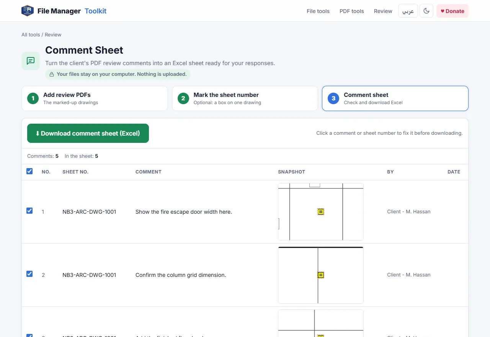

How to export Bluebeam markups to Excel
Turn the markups and comments in a Bluebeam-reviewed PDF into an Excel comment response sheet, with the sheet number, the comment, the author and a picture of each markup, ready for your replies.
Your files stay on your computer. Nothing is uploaded.
Short answer
Bluebeam markups are saved inside the PDF as standard PDF annotations. Open PDF Comments to Excel, add the marked-up PDFs and click Download Excel: you get one row per markup with the sheet number, page, comment, author, date and a snapshot of the spot it points to.
Two ways to do it
Inside Bluebeam Revu: open the Markups List, filter it if you need to, and export it to CSV or a summary. This works when you have Revu and only need the raw list.
Without Revu, as a response sheet: when the PDFs come back from the client or consultant and you need a sheet to answer each comment, PDF Comments to Excel builds it directly from the files. It also works for comments made in Acrobat, PDF-XChange, Foxit or any other PDF reader, so one sheet can hold the comments of everyone who reviewed the set.
Step by step
Collect the reviewed PDFs
Put the marked-up PDFs in one folder. They can be single sheets or a combined set, reviewed in Bluebeam or any other PDF reader.
Add them to the tool
Open PDF Comments to Excel and choose the files or the folder. Every markup is found, clouds, callouts, text boxes, sticky notes and highlights, with any replies under it.
Check the list
Each markup shows with its sheet number, the comment text, who wrote it and when. Untick anything you do not want in the sheet.
Download the Excel sheet
Click Download Excel. Each row has a picture of the marked area and empty Response and Status columns for your team.
Answer and send back
Write a response to every comment, set the status, and return the sheet with the revised drawings.

Tips
- Ask reviewers to type their comment in the markup itself, not only draw a cloud: a cloud with no text has nothing to reply to.
- Flattened markups are no longer comments, they are part of the drawing. Ask for the unflattened PDF.
- Keep the response sheet with the revision: the next issue's transmittal can say "comments addressed as per the response sheet".
Make your comment response sheet
Free, runs in your browser, and your drawings never leave your computer.
Open PDF Comments to Excel →Questions
Do I need Bluebeam Revu to export the markups?
No. Bluebeam saves markups as standard PDF annotations, so they can be read from the PDF without Revu.
Which markups are exported?
Every markup on the page: clouds, callouts, text boxes, sticky notes, highlights and other annotations, with their comment text and replies. Flattened markups are part of the page and cannot be read as comments.
Can I combine comments from Bluebeam and Acrobat in one sheet?
Yes. Add all the reviewed PDFs together; comments from every PDF reader end up in the same Excel sheet.
Is it free?
Yes, with no account and no limit on the number of files.
Are the PDFs uploaded?
No. They are opened by your browser on your own computer and nothing is sent to a server.